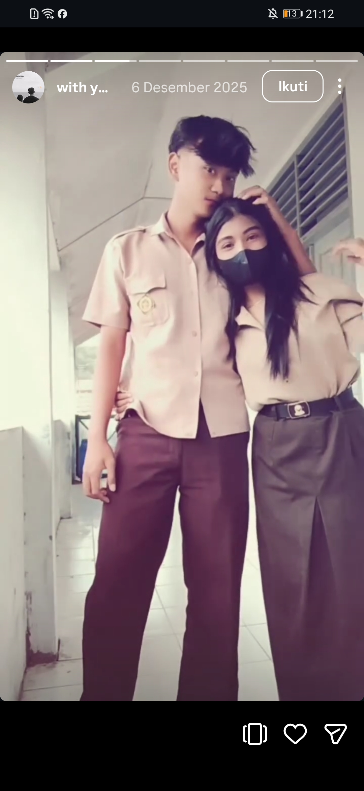
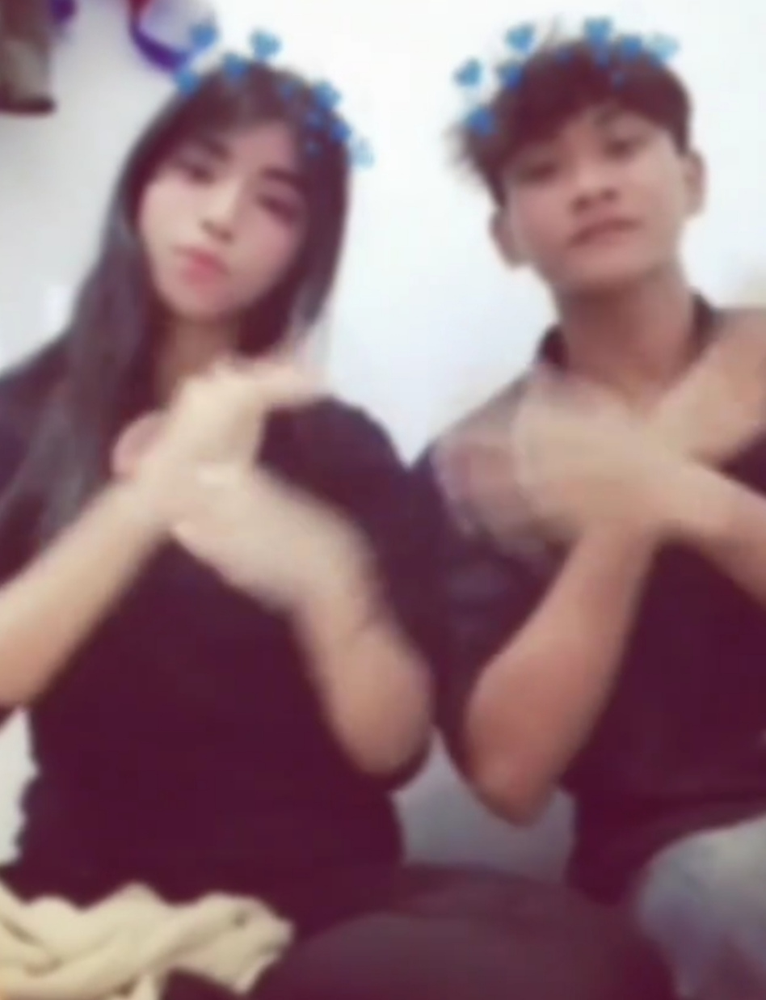

sebuah surat yang tertunda
Untuk Fitria.
Surat yang mungkin seharusnya
sudah lama aku tulis.
baca ketika kamu siap
Fitria,
Aku membuat halaman ini bukan untuk meminta kamu kembali, bukan juga untuk memaksa kamu menjawab apa pun.
Aku cuma ingin menyampaikan sesuatu yang mungkin selama ini belum pernah aku sampaikan dengan baik.
Aku minta maaf.
Maaf untuk semua kesalahan aku, untuk hal-hal yang mungkin pernah membuat kamu tidak nyaman, dan untuk setiap kali kehadiranku justru mengganggu ketenanganmu.
Aku sadar, mungkin ada hal-hal yang tidak bisa diperbaiki hanya dengan kata maaf.
Karena itu, kali ini aku tidak ingin meminta apa-apa darimu.
Aku cuma ingin mengucapkan terima kasih.
Terima kasih karena pernah menjadi bagian dari hidupku. Terima kasih untuk waktu, perhatian, cerita, dan kenangan yang pernah kita punya.
Mungkin setelah ini jalan kita memang harus benar-benar berbeda.
Dan aku akan belajar menerima itu.
Setelah surat ini, aku berjanji untuk menghargai ruang dan kehidupanmu. Aku tidak akan mengganggu kamu lagi. Bukan karena aku membenci kamu, tapi karena aku sadar bahwa terkadang bentuk sayang yang terakhir adalah belajar melepaskan.
Aku berharap kamu baik-baik saja.
Semoga hidupmu dipenuhi hal-hal baik, orang-orang baik, dan kebahagiaan yang kamu cari.
Tidak perlu membalas surat ini.
Cukup baca sampai selesai, dan setelah itu anggap surat ini sebagai penutup dari semua yang pernah ada di antara kita.
Sekali lagi, maaf.
Dan terima kasih untuk semuanya.
tanpa syarat apa pun
Janji terakhirku.
Ada beberapa hal yang ingin aku bawa pergi dengan tenang.
- 01Aku akan menghargai batasmu.
- 02Aku tidak akan mengganggu kehidupanmu lagi.
- 03Aku akan belajar menerima bahwa tidak semua hal harus kembali seperti dulu.
- 04Dan aku akan melanjutkan hidupku dengan membawa pelajaran dari semua yang pernah terjadi.
disimpan baik-baik
Terima kasih untuk kenangan
yang pernah ada.
Ruang kecil ini sengaja kubiarkan kosong. Kalau suatu hari ingin, kamu bisa mengisinya dengan cerita versimu sendiri.

kenangan 01

kenangan 02
kenangan 03
biarkan tinggal
sebagai hangat.
sampai di sini
Selamat tinggal,
Fitria.
Semoga setelah ini kita sama-sama menemukan ketenangan dengan jalan kita masing-masing.